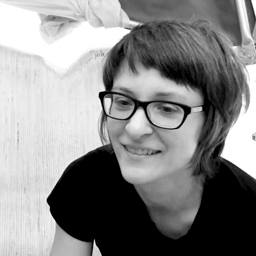

Team
Sarah Grant

Sarah is a Brooklyn-based artist and educator. She is a former artist-in-residence of the Eyebeam Art and Technology Center and is currently a Technical Lead at The Barbarian Group and Adjunct Professor at NYU Polytechnic in Digital Media. Her work explores both the practical and expressive properties of wireless networks for connecting people who are in close proximity to each other in order to encourage participation within their immediate geographical location. To support this, she developed the Subnodes project (http://subnod.es), which attempts to make DIY networking more understandable and accessible to non-technical people, in addition to creating a set of tools for her own experiments.

Erica Kermani is an artist, educator, and community organizer based in Brooklyn, NYC. As Director of Community Engagement at Eyebeam, Erica develops and produces project-based public programming around social justice, arts, and technology. Her role as an organizer, educator and arts administrator has been informed by over fifteen years of experience at organizations including BRIC Arts Media, Arts High Foundation, Media Arts Center San Diego, Center on Policy Initiatives, and Q-Team. Erica's arts practice involves traditional textile fabrication and new media installation informed by queer identity, subversion, feminism, and Iranian culture. Erica received a Bachelor’s of the Arts in both Visual Arts (Media-Computing) and Political Science at the University of California, San Diego.

Amelia Marzec has been a resident at Eyebeam Art and Technology Center, a Fellow at the Tow Center at Columbia University, a Fellow at A.I.R. Gallery, and a CUNY-PSC Grantee. She was nominated for the World Technology Awards for Art, and has shown work at MIT and SIGGRAPH.
 EYEBEAM is a nonprofit artist colony and R&D lab that supports dynamic and risk-taking work at the intersection of art and technology. Eyebeam is dedicated to educating and exposing audiences to experimental and interdisciplinary work, providing an environment for dialogue, collaboration, and discovery. Eyebeam.org
EYEBEAM is a nonprofit artist colony and R&D lab that supports dynamic and risk-taking work at the intersection of art and technology. Eyebeam is dedicated to educating and exposing audiences to experimental and interdisciplinary work, providing an environment for dialogue, collaboration, and discovery. Eyebeam.org